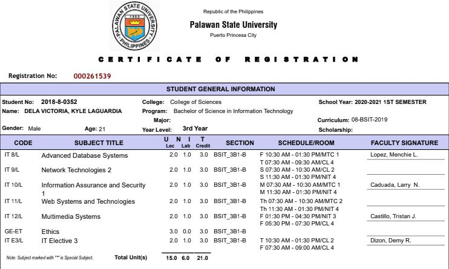

Made by Kyle dela victoria. My parents are Jennifer dela Victoria and Apollo dela Victoria.
Born in January 5, 1999, in adventist hospital. I had interest in music and art but it's not
as much as back then. I used to be in a choir in my church back then suprise suprise.
You will most likely
find me in a computershop or at home. I rarely like people but once I do. I will be one of your close friends.
Nickname is tata and i'm a 21 year old IT student from Philippines.
My dream is to be successful one day and have
all the money that i'll need to make my parents proud.
After college, there's a chance to go to canada since many of my relatives are there.
Maybe this will make my dream in a reality.
my hobbies are playing computer, eating foods and biking.
Hi and welcome to my github page and I hope
you find it pleasing being here.
Here is my COR :)
